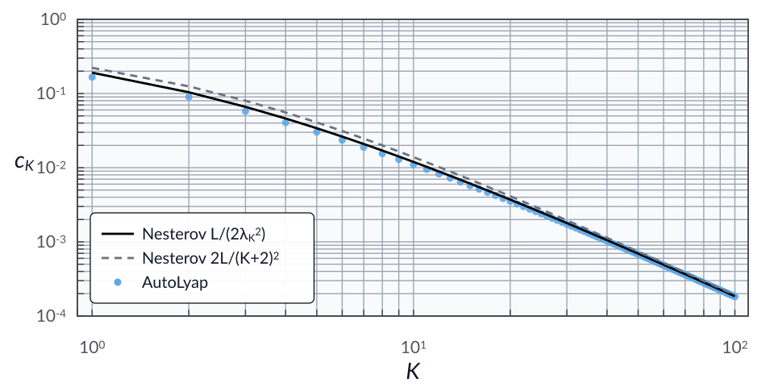

Nesterov’s fast gradient method
Problem setup
Consider minimizing a convex and \(L\)-smooth function \(f : \calH \to \reals\), with \(L > 0\).
For initial points \(x^{-1},x^0 \in \calH\), step size \(\gamma \in \reals_{++}\), and \(\lambda_0 = 1\), Nesterov’s fast gradient method is
For \(\gamma = 1/L\), the classical bound in [Nes83] is
where \(x^\star \in \Argmin_{x \in \calH} f(x)\).
In this example, we compute the smallest AutoLyap certificate constant \(c_K\) such that
Run the iteration-dependent analysis
This example uses the MOSEK Fusion backend (backend="mosek_fusion").
Install the optional MOSEK dependency first:
pip install "autolyap[mosek]"
from autolyap import IterationDependent, SolverOptions
from autolyap.algorithms import NesterovFastGradientMethod
from autolyap.problemclass import InclusionProblem, SmoothConvex
L = 1.0
K = 10
problem = InclusionProblem([SmoothConvex(L)])
solver_options = SolverOptions(backend="mosek_fusion")
# Nesterov fast gradient method
nfgm = NesterovFastGradientMethod(gamma=1.0 / L)
# Use j=2 to select x^k; j=1 corresponds to y^k.
Q_0_nf, q_0_nf = IterationDependent.get_parameters_distance_to_solution(
nfgm, 0, i=1, j=2
)
Q_K_nf, q_K_nf = IterationDependent.get_parameters_function_value_suboptimality(
nfgm, K, j=2
)
result_nf = IterationDependent.search_lyapunov(
problem,
nfgm,
K,
Q_0_nf,
Q_K_nf,
q_0=q_0_nf,
q_K=q_K_nf,
solver_options=solver_options,
)
if result_nf["status"] != "feasible":
raise RuntimeError("No feasible chained Lyapunov certificate for Nesterov FGM.")
def lambda_k(k: int) -> float:
lam = 1.0
for _ in range(k):
lam = 0.5 * (1.0 + (1.0 + 4.0 * lam * lam) ** 0.5)
return lam
lam_K = lambda_k(K)
c_K_nf = result_nf["c_K"]
c_K_nesterov = L / (2.0 * lam_K**2)
c_K_nesterov_simple = 2.0 * L / ((K + 2.0) ** 2)
print(f"Nesterov FGM c_K (AutoLyap): {c_K_nf:.6e}")
print(f"Nesterov FGM c_K (L/(2*lambda_K^2)): {c_K_nesterov:.6e}")
print(f"Nesterov FGM c_K (2L/(K+2)^2): {c_K_nesterov_simple:.6e}")
Sweeping over \(K \in \llbracket 1, 100\rrbracket\) gives the log-log plot below, with the two classical bounds as lines and AutoLyap certificates as blue dots.
{kind=link}

References
Yurii Nesterov. A method for solving the convex programming problem with convergence rate o(1/k^2). Doklady Akademii Nauk SSSR, 269(3):543–547, 1983.